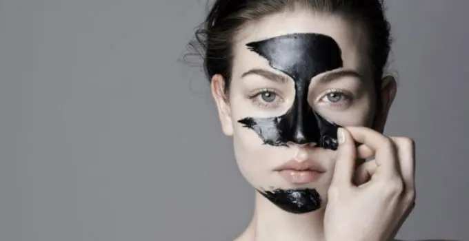
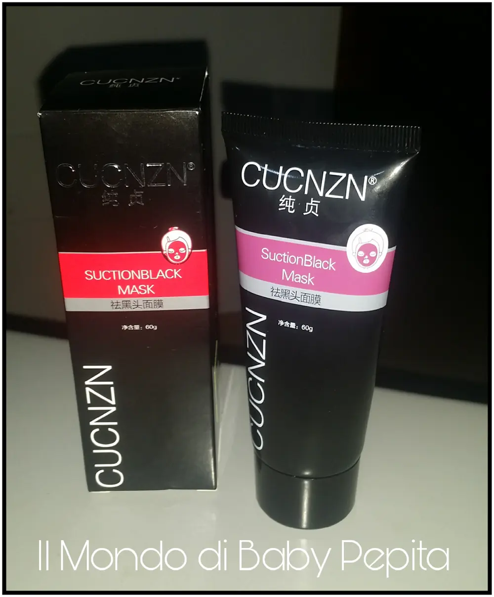
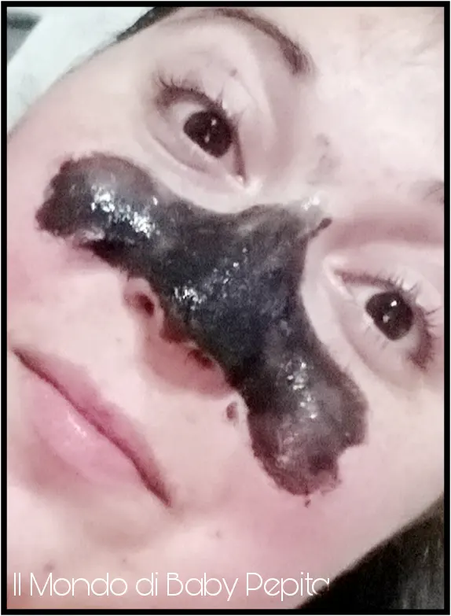
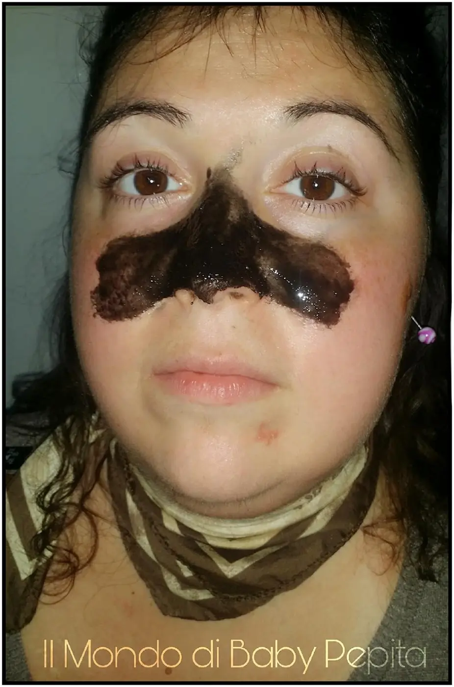
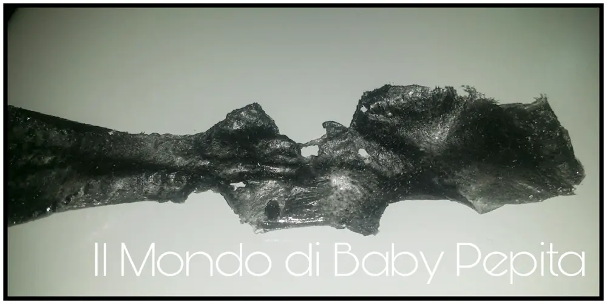
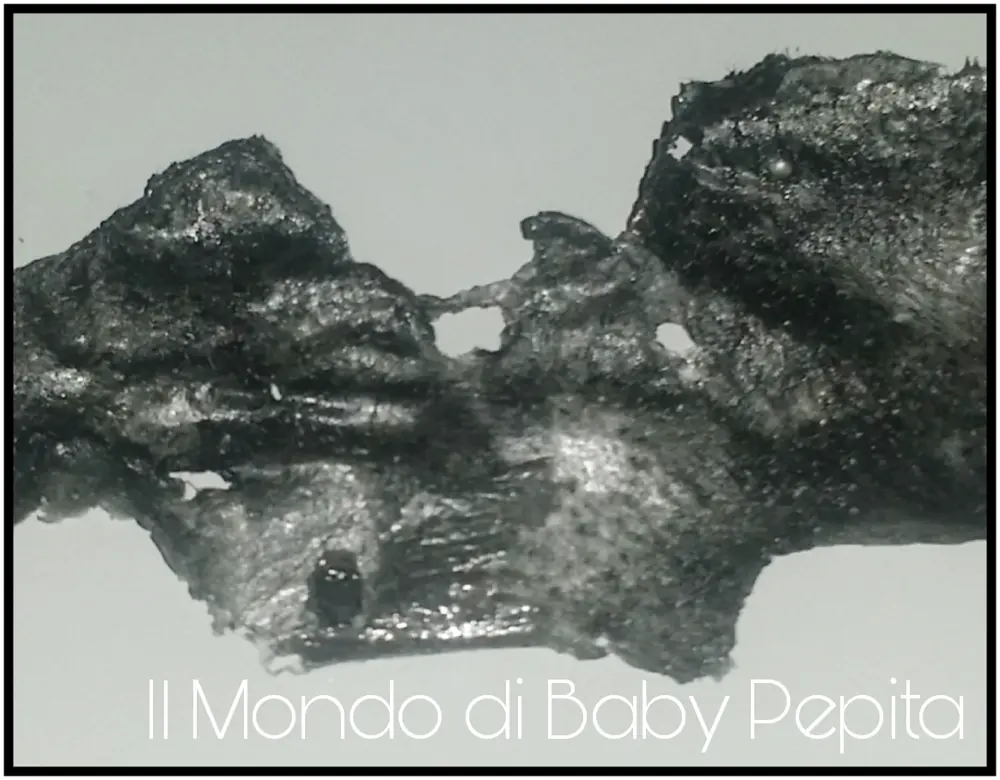

Black mask - maschera nera

Ne vediamo talmente tante in giro per il web di Black mask, che non sappiamo se credere oppure no alla sua efficacia. .Ho avuto dubbi anch'io, ho pensato "ma questa cosa tutta nera sul viso sporcherà soltanto", "sarà un'altra trovata per vendere". . ed è così che ho voluto provare anch'io. .
E' una skincare del momento, un trend per tutte le fashion blogger e centri estetici.

E' un'idea che arriva ancora una volta, dall'Asia, infatti i marchi più venduti al momento sono più coreani e per lo più vengono acquistate da internet o Amazon, soprattutto per il basso costo. Il mercato infatti, si aggira da 1,00 € ad un massimo di 8,00 € per quanto riguarda quelle appunto su internet, invece per i brand che più conosciamo i prezzi sono svariati ma ben oltre gli 8,00 € .
Gli ingredienti perché è nera? ( Black mask)
Il motivo del perché è di questo colore è perché all'interno ha il carbone vegetale. Il carbone vegetale ha proprietà che assorbono il sebo garantendo la pelle purificata.

A cosa serve prima di tutto?
E' una maschera purificante che elimina le cellule morte e lascia la pelle più lisca. Ma elimina davvero i punti neri così come si vede online?
Come usarla?
Va applicato sulle zone da trattare, (io consiglio di fare una prima stesura e lasciarla asciugare e poi un'altra stesura per rendere il composto/la pellicola più spessa per quando andrete a rimuoverla) bisogna prenderci la mano insomma.

Prima dell'applicazione però, con un asciugamano bagnato con acqua molto calda, aprite i pori per qualche minuto, poi applicate il gel e lasciate asciugare la maschera (10/15 minuti).
Tenetela più o meno 20 minuti in posa e poi iniziate a staccarla dal basso verso l'alto.
Una volta staccata noterete sulla superficie della maschera staccata le varie impurità della pelle ed i punti neri estratti dalla pelle.

A me si vede poco.

Dopo fatto questo, sciacquate il viso e stendete un tonico. Noterete subito che la pelle è morbida ed ha un aspetto migliore; utilizzarla circa 2-3 volte a settimana, migliora nel tempo lo stato di salute della pelle, migliorandola sensibilmente.
E voi l'avete provata? Fatemi sapere come vi siete trovate/i?